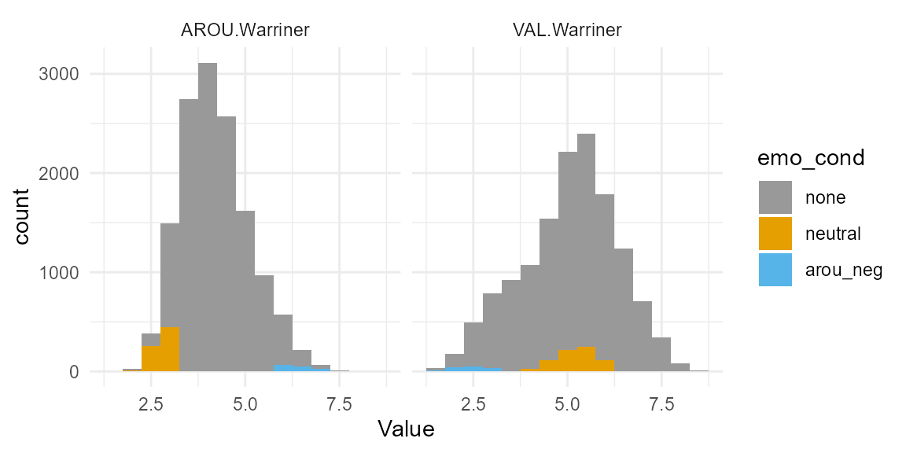
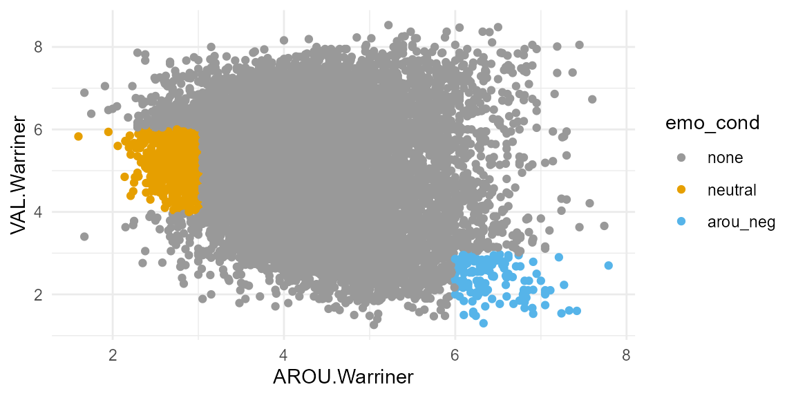
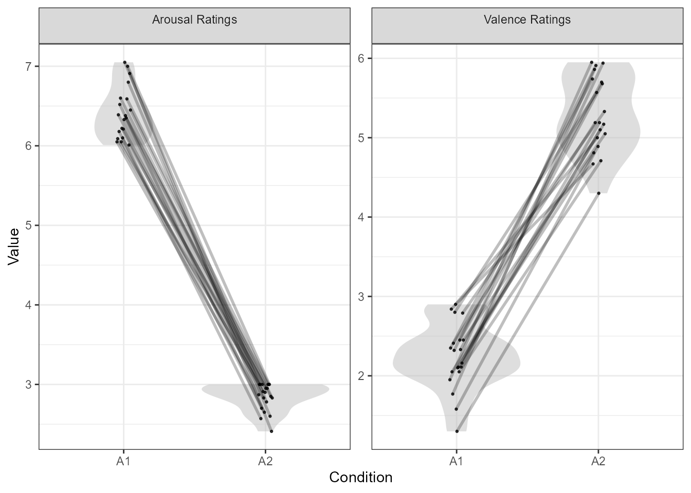

By default, LexOPS will split by a single variable for each use of
split_by(), and will create items for each factorial cell.
For instance, splitting by arousal into 2 levels, and emotional valence
into 3 levels, would result in 6 factorial cells. But what if we want to
generate items for just 2 of these 6 factorial cells? We can do this by
creating a factor/character vector column in our data which will
represent suitability for each factorial cell. This vignette provides an
example, where we want to compare high arousal, negative emotional words
to low arousal neutral words.
We’ve decided we want our stimuli to have two conditions: high arousal, negative, and low arousal, neutral, according to Warriner et al. (2013).
Both arousal and valence are on 9-point Likert scales, so let’s imagine we decide on the following cut-offs:
Firstly we create the column that will contain the information about
our conditions. An easy way to do this might be with
dplyr’s case_when() function. We will call the
new column, emo_cond, because I’m unimaginative.
dat <- lexops |>
mutate(emo_cond = case_when(
AROU.Warriner >= 6 & VAL.Warriner <= 3 ~ "arou_neg",
AROU.Warriner <= 3 & between(VAL.Warriner, 4, 6) ~ "neutral",
TRUE ~ "none"
))Now let’s check our conditions’ locations on the distributions of arousal and valence ratings.
dat |>
select(string, AROU.Warriner, VAL.Warriner, emo_cond) |>
pivot_longer(cols = c(AROU.Warriner, VAL.Warriner), names_to = "Variable", values_to = "Value") |>
mutate(emo_cond = fct_infreq(as.factor(emo_cond))) |>
ggplot(aes(Value, fill = emo_cond)) +
geom_histogram(binwidth = 0.5) +
facet_wrap(vars(Variable)) +
scale_fill_manual(values = c("#999999", "#E69F00", "#56B4E9"))
We can also visualise the locations of our conditions in this 2D space.
dat |>
mutate(emo_cond = fct_infreq(as.factor(emo_cond))) |>
ggplot(aes(AROU.Warriner, VAL.Warriner, colour = emo_cond)) +
geom_point() +
scale_colour_manual(values = c("#999999", "#E69F00", "#56B4E9"))
Let’s imagine we decide those cut-offs are sensible. We can now generate matched stimuli, for only these two factorial cells.
stim <- dat |>
split_by(emo_cond, "arou_neg" ~ "neutral") |>
control_for(Length) |>
control_for(Zipf.SUBTLEX_UK, -0.1:0.1) |>
control_for(AoA.Kuperman, -1.5:1.5) |>
generate(20)## Warning in split_by(dat, emo_cond, "arou_neg" ~ "neutral"): Column emo_cond is
## type character so will be treated as a factor.## Warning in control_for(split_by(dat, emo_cond, "arou_neg" ~ "neutral"), : No
## tolerance given for numeric variable 'Length', will control for exactly.## Generated 1/20 (5%). 1 total iterations, 1.00 success rate.Generated 2/20 (10%). 2 total iterations, 1.00 success rate.Generated 3/20 (15%). 9 total iterations, 0.33 success rate.Generated 4/20 (20%). 10 total iterations, 0.40 success rate.Generated 5/20 (25%). 12 total iterations, 0.42 success rate.Generated 6/20 (30%). 17 total iterations, 0.35 success rate.Generated 7/20 (35%). 18 total iterations, 0.39 success rate.Generated 8/20 (40%). 19 total iterations, 0.42 success rate.Generated 9/20 (45%). 21 total iterations, 0.43 success rate.Generated 10/20 (50%). 22 total iterations, 0.45 success rate.Generated 11/20 (55%). 23 total iterations, 0.48 success rate.Generated 12/20 (60%). 26 total iterations, 0.46 success rate.Generated 13/20 (65%). 27 total iterations, 0.48 success rate.Generated 14/20 (70%). 28 total iterations, 0.50 success rate.Generated 15/20 (75%). 40 total iterations, 0.38 success rate.Generated 16/20 (80%). 54 total iterations, 0.30 success rate.Generated 17/20 (85%). 59 total iterations, 0.29 success rate.Generated 18/20 (90%). 61 total iterations, 0.30 success rate.Generated 19/20 (95%). 62 total iterations, 0.31 success rate.Generated 20/20 (100%). 63 total iterations, 0.32 success rate.Here are the 20 words per factorial cell we generated.
print(stim)| item_nr | A1 | A2 | match_null |
|---|---|---|---|
| 1 | deathly | origami | A1 |
| 2 | terrorist | consensus | A1 |
| 3 | terrify | remover | A2 |
| 4 | epidemic | conclude | A1 |
| 5 | kidnapper | shoemaker | A2 |
| 6 | liar | fold | A2 |
| 7 | thief | shade | A1 |
| 8 | doomsday | insignia | A1 |
| 9 | cannibal | rephrase | A1 |
| 10 | suicide | concept | A1 |
| 11 | rapist | casing | A2 |
| 12 | frostbite | stillness | A2 |
| 13 | asshole | gradual | A1 |
| 14 | penitentiary | incomparable | A1 |
| 15 | invasion | suitable | A2 |
| 16 | bullshit | hallmark | A2 |
| 17 | tragedy | profile | A2 |
| 18 | poison | holder | A2 |
| 19 | gunfire | prairie | A1 |
| 20 | injustice | limestone | A2 |
We can use the plot_design() function to check the
distributions of the variables we used to create the
emo_cond column. This shows the expected differences
between conditions A1 and A2, based on the method we used to create the
new column.
plot_design(stim, c("AROU.Warriner", "VAL.Warriner"))